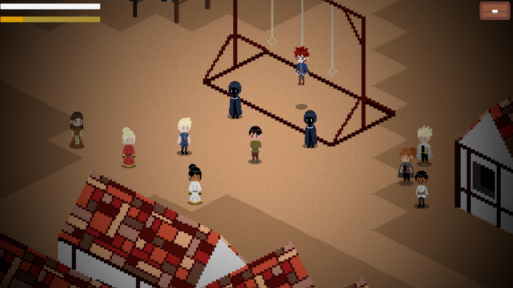
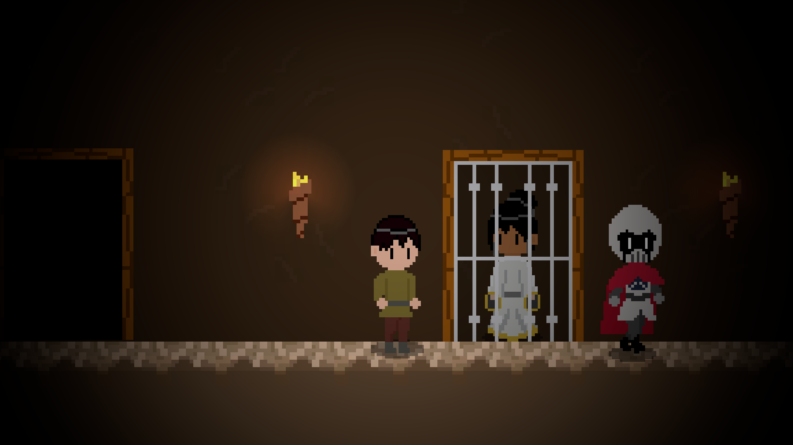
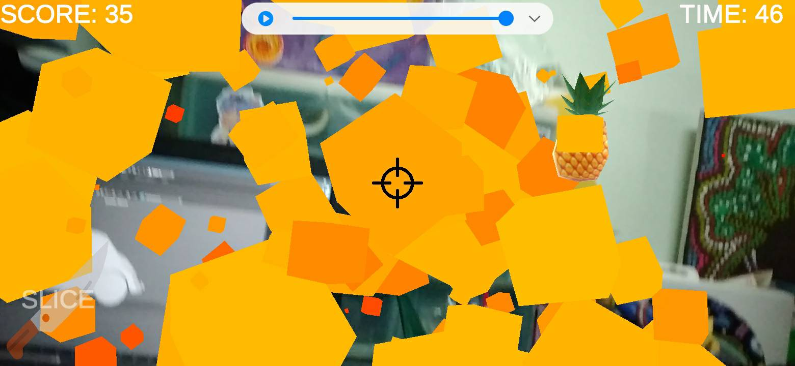
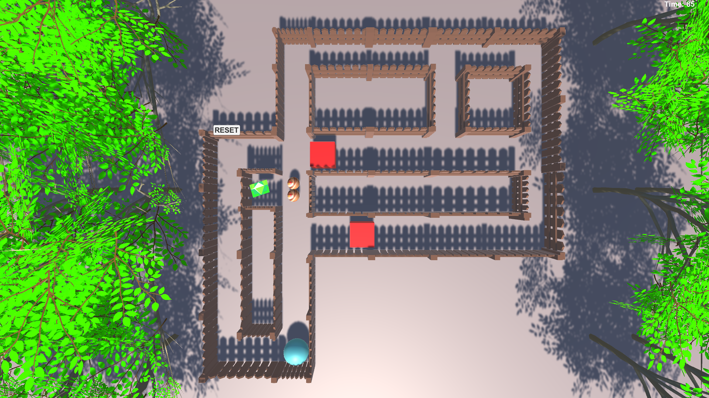

My Game Projects
The Truth (2020)
Puzzle/Survival 2D Top-Down isometric game. This game I had made with my friends in third year for NSC 2020 competition. My role in this team is an artist. In this game player must collect a document, talk with NPC for gather the story information and the hints for solving puzzle to reach the end of the game.

Prison Break (2020)
2D Platformer/Puzzle game that I had made in third year and this game is a sequel of The Truth. Player must break the prison by solving puzzles or finding items that game set in the level, along with sneaking away the guards. If player is caught by guards, they will lose immediately.

Furite Vender (2020)
Casual AR game on Android that I had made in third year. Player will slice fruits as much as player can within limited time. If player slices a bomb, they will deduct points.

The White Ball (2020)
2.5D Platformer game, inspire from Super Mario Bros. This game I had made in second year. Player must dabble an obstacle to reach the goal. If player falls into the abyss or collide with an enemy 3 times, they will respawn at last checkpoint that they have reach.

Stein (2019)
3D Platformer/Puzzle that I had made in first year and is the first game for Unity Engine. Player must Solving boulder puzzle to reach next level and in the level will have obstacle are bomb and countdown time. If player collide bomb or time out, they will restart in that level.